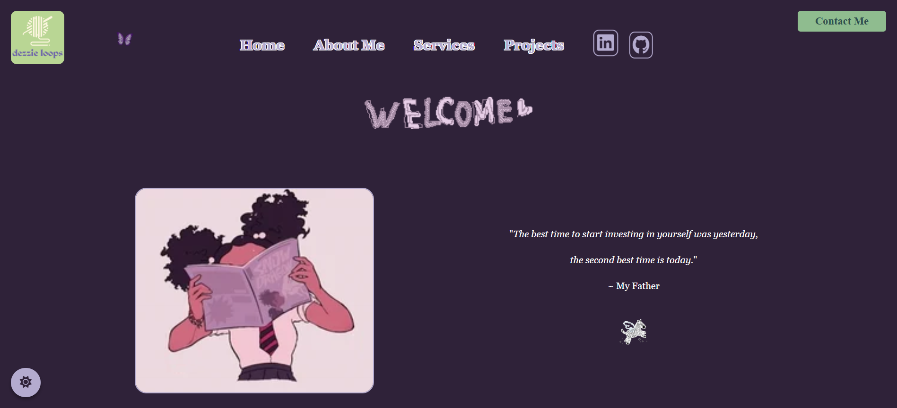
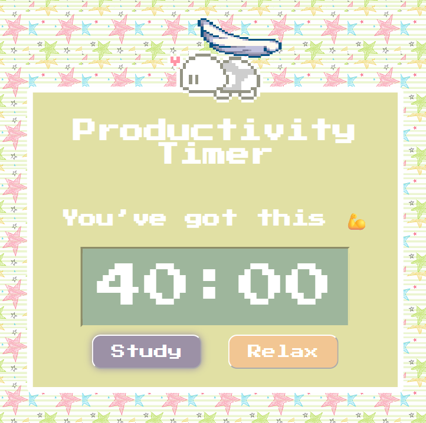

Project 1: Cash Compass: Finance Bot (React, HTML/CSS, JavaScript) + Investment Growth Calculator (C++)
Developed a responsive web application with a conversational, chatbot-style interface to explain financial concepts such as budgeting, credit, saving, and investing in an approachable way for young adults.
Built an automated bot that delivers interactive quizzes with real-time feedback and progress tracking to reinforce learning and measure user comprehension.
Integrated dynamic data visualizations to illustrate financial scenarios and make abstract concepts tangible.
Supplied references to trusted external resources for users to explore financial literacy in greater depth.
Applied component-based design in React with reusable UI elements and state management to ensure scalability and maintainability.
Integrated a C++ console application that models compound interest and investment growth.
Implemented functions to calculate real-time estimations to reach financial goals, required contributions, target return rates, and future value using formula-based computations.
Project 2: Personal Portfolio (HTML/CSS, JavaScript)
Built and deployed a fully responsive portfolio site to showcase both engineering and creative projects in a witty, personable way.
Designed light/dark mode themes and layouts optimized for both mobile and desktop.
Integrated an interactive Google Sheets linked contact form.
Featured technical projects: software, AI/ML, engineering, alongside creative work: crafts and graphic design.
Connected professional socials (LinkedIn, GitHub) for networking. Along with access to my resume and email for potential collaborations.

Personal Portfolio GitHub Repo
Project 3: Pomodoro App (Electron.js, HTML/CSS, Figma)
Built an Electron.js application that implements the Pomodoro Technique for time management, allowing users to set work and break intervals.
Designed a user-friendly interface with HTML/CSS and created interactive elements using Figma for a polished look.
Implemented rotating motivational phrases that update every 30 seconds to keep users encouraged and focused throughout study sessions.
Integrated a Bossa Nova Study Spotify playlist.
Configured custom timers featuring a 25-minute study cycle followed by a 5-minute relaxation period for balanced productivity.
Enhanced the user experience with audio feedback through subtle sound effects that play when buttons are pressed or timers complete, reinforcing focus and engagement.

Pomodoro App
Project 4: Password Security Strengthener (Java)
Built a Java console application that evaluates password strength on a 0–100 scale using regex-based rules
(length, case sensitivity, digits, and special characters), providing users with real-time feedback.
If a password is deemed too weak, the program automatically generates a secure, randomized alternative
that meets strong security criteria.